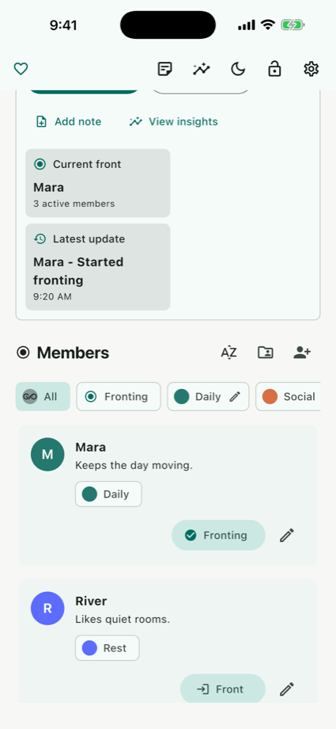
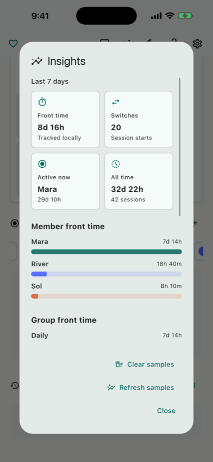
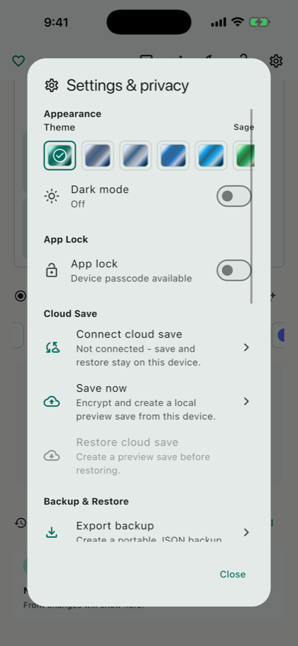
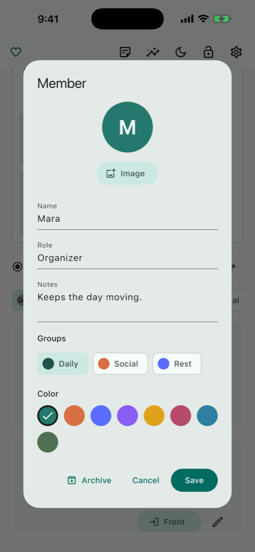

Members and parts
Create members, add roles and notes, choose colors, attach profile images, and organize related members into groups.
IFS, DID, and OSDD-informed tracking
A private mental health tool for parts and system work, with member organization, fronting history, notes, local insights, and backups that keep the current device in control.



Built for real-life system work
All Of Me is for people doing IFS-informed self-reflection, DID/OSDD-informed organization, or private parts work who need a calm place to keep names, notes, fronting history, and recovery tools together.
Create members, add roles and notes, choose colors, attach profile images, and organize related members into groups.
Track one or more active members, add timeline notes, and keep a local history of sessions that can be reviewed later.
Restore recently deleted items, use app lock, export readable backups, and restore from optional encrypted Cloud Save.
Local first by default
All Of Me does not require an account, analytics, advertising, or a server connection for core workflows. The app is designed around manual save and restore, more like save points than live sync.

Cloud Save, not live sync
Cloud Save stores encrypted manual restore points when you choose to save. The recovery key stays with you, and All Of Me Cloud is not designed to decrypt your backup package.
Use the default All Of Me Cloud server or configure a compatible server.
Create an encrypted restore point when you decide the current device is ready.
Create a one-time link code from an existing device when adding a new one.
Use your recovery key to restore the latest Cloud Save package.
Plain-language docs
What to do when you get a new phone, including link codes and recovery keys.
What is uploaded, what stays encrypted, and what Cloud Save is not.
How local JSON export/import works and why backup files are sensitive.
How All Of Me positions itself as self-management, not clinical care.